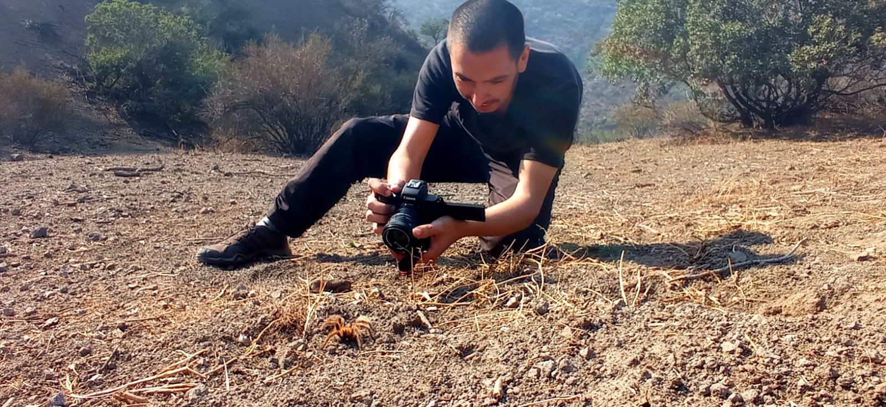

Sobre mi
Agustín Rojas - Fotógrafo macro

Soy Agustín Rojas, más conocido como Caracol, desde esta página podrás ver mi trabajo como fotógrafo macro además de poder adquirir mis productos relacionados, como prints de mis fotografías.
La fotografía macro de bichos es una pasión que te coloca en contacto directo con la naturaleza en un estado meditativo de observación que a través de la cámara puedes experimentar. La paciencia es clave en este tipo de fotografías puesto que tu sujeto a fotografiar puede llegar a ser un insecto volador muy rápido y movedizo, o incluso a veces algo agresivo, y siempre es importante mantener la distancia y el respeto a las criaturas que viven en la naturaleza.
De forma paralela trabajo en post-producción, motion graphics y además soy desarrollador frontend. De hecho este sitio web está diseñado por mi.